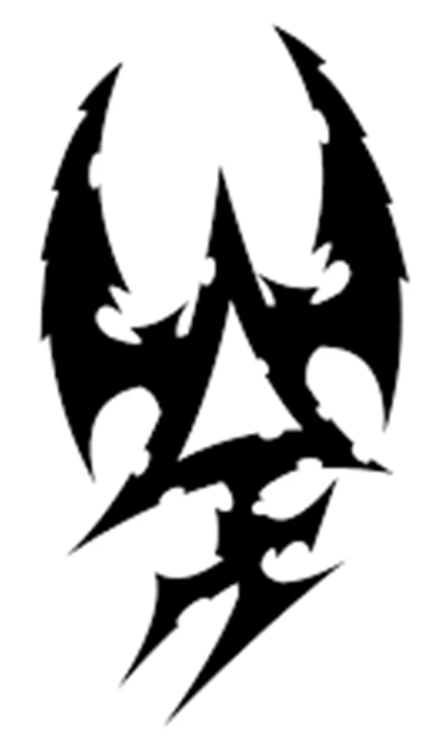

Drukhari
Runa que representa a los Drukhari

Los Drukhari (Aeldarix malum) (pronunciado Druh-KAR-ee) o "Oscuros" en el Léxico Aeldari, también conocidos por los forasteros como los Eldar Oscuros, son una estirpe Aeldari abandonada y corrupta, las contrapartes sádicas y maliciosas de los Asuryani. Al igual que sus primos de los mundos astronave, los Drukhari son una raza alienígena antigua y muy avanzada de humanoides feérico.
Los Drukhari son únicos entre las especies inteligentes de la Vía Láctea porque no viven en uno o más mundos asentados, sino que la mayor parte de su población se concentra en una repugnante ciudad-estado, la Ciudad Oscura de Commorragh, que se encuentra dentro del Immaterium "ordenado" de la Red Aeldari.
Los Drukhari son principalmente piratas y esclavistas que se aprovechan de objetivos en toda la galaxia para alimentar sus impíos apetitos por las almas de otros seres sintientes, un deseo terrible llamado "la Sed", aunque a veces son utilizados como mercenarios por otras especies espaciales.
Existen muchos Dioses del Caos menores dentro del Reino del Caos, pero los cuatro Dioses del Caos principales (Khorne, Tzeentch, Slaanesh y Nurgle) son particularmente infames y poderosos, y poseen una gran influencia sobre el mundo. Cada uno encarna un aspecto particular y muy básico de la existencia mortal, siendo ira, cambio, placer y muerte, respectivamente.
Los Drukhari son la encarnación viviente de todo lo que hay de desenfrenado y cruel en el carácter Aeldari. Altamente inteligentes y tortuosos hasta el punto de la obsesión, estos piratas se deleitan con el dolor físico y emocional de los demás, porque alimentarse de los residuos psíquicos del sufrimiento es la única manera de evitar el lento consumo de los suyos por parte del Dios del Caos Slaanesh. almas.
A pesar de su belleza física según los estándares humanos, los Drukhari siguen siendo monstruos repugnantes. Cuando se ven con la visión de bruja de un psíquico, se revelan las almas negras de los Drukhari, ya que eternamente tienen sed sólo de la energía psíquica de la angustia y el tormento de otros seres pensantes para llenar su propio vacío infinito.
A diferencia de sus primos Aeldari del Mundo Astronave, los Drukhari no integran sus aún poderosas habilidades psíquicas latentes en su cultura y, de hecho, sienten un gran desdén por los psíquicos de cualquier tipo. Esto se debe a que para los Drukhari, el uso de habilidades psíquicas sólo atraería aún más la atención de "La que tiene sed" (Slaanesh) sobre ellos, y sus almas ya corren suficiente riesgo de ser devoradas por el Príncipe del Caos.
Guerrero Drukhari
Figuras de los Drukhari